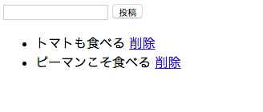

非同期通信を用いた機能を実装することを通じて、Railsにおける非同期通信の実装の仕方を学びます。
「はじめに」のカリキュラムにて説明していますが、改めて説明します。
ブラウザがサーバにリクエストを送り、サーバがリクエストに応じた処理をし、レスポンスをブラウザにHTMLという形で返し、ブラウザがそれを表示する、という通常の流れとは別に、JavaScriptがサーバとする通信のことを非同期通信と呼びます。また、その通信をする仕組みのことをAjaxと呼びます。
Ajaxを用いることで、画面遷移することなく、サーバと通信することができます。画面遷移しない分、ユーザに快適なブラウジングを提供することができます。レスポンスに応じて、HTMLの要素を書き換えることもできるため、ブラウザとの通信の後にビューにちょっとした変化しか無い場合はAjaxを使うことを検討しましょう。
今回作るのは以下のような、次々と一行のメモを残すことの出来るアプリです。
画面遷移することなくメモを投稿することができ、また、データベースにも保存されます。
まずは、Ajaxを用いずに、メモを投稿する機能と、表示する機能を実装しましょう。
大まかに以下のような手順で実装します。
① アプリケーションを作成する（bundle installも実行される）
② Memoモデルを作成する
③ Memosコントローラーを作成し、トップページに対応するindexアクションを定義する
④ indexアクションに対応するビューファイルを作成する
⑤ indexアクションに対応するルーティングを追加する
⑥ 投稿に対応するアクションを定義する（トップページにリダイレクトさせる）
⑦ 投稿に対応するルーティングを追加する
順に実装していきましょう。
JavaScriptの実装がメインであるため、やや駆け足で説明します。
PicTweetと同じように作成しましょう。
1 |
$ rails new memo-app -d mysql
|
これにより、memo-appという名前のアプリケーションが作成されました。
さて、「WebページでJavaScriptを使ってみよう」のカリキュラムでやったように、mysql2の最新バージョンには問題があるため、Gemfileの記述を変更し、bundle installする必要があります。
1 2 |
# 7行目付近のmysql2の記述を以下のように書き換える
gem 'mysql2', '0.3.18'
|
これにより、使うmysql2のバージョンを指定することができました。それではbundle installしましょう。
※なお、以下の操作は全てアプリケーションのディレクトリで行って下さい。
1 |
$ bundle install
|
また、データベースの作成も行いましょう。
1 |
$ rake db:create
|
これにより、データベースが作成され、Sequel Proからアクセスできるようになりました。
メモを投稿するため、そのモデル（テーブル）を用意しないといけませんね。メモの中身を表すtextカラムをstring型で定義しましょう。
※なお、これ以降のコマンドは全てアプリケーションのルートディレクトリで行って下さい。
1 |
$ rails g model memo text:string
|
これにより、Memoモデルが作成され、同時に、memosテーブルを作成するマイグレーションファイルが作成されました。
次に、memosテーブルを作成するためにrake db:migrateを実行しましょう。
1 |
$ rake db:migrate
|
これで、memosテーブルが作られました。
1 |
$ rails g controller memos
|
これにより、Memosコントローラーが作成されます。次に、トップページに対応するアクションとしてindexアクションを定義しましょう。
indexアクションでは、メモの一覧を表示するので、全てのメモを取得しましょう。
また、投稿フォームのform_forメソッドの引数として用いるインスタンスを定義しておきましょう。こちらについては、後ほど説明します。
1 2 3 4 5 6 |
class MemosController < ApplicationController
def index
@memos = Memo.all
@memo = Memo.new
end
end
|
これでindexアクションが定義されました。
ビューではメモの一覧を表示するので、取得しておきましょう。
indexアクションに対応するビューファイルでは、メモの一覧が表示されます。
PicTweet同様、部分テンプレートを用いて実装しましょう。
1 2 3 |
<ul>
<%= render @memos %>
</ul>
|
次に、部分テンプレートを作成します。
1 2 3 |
<li>
<%= memo.text %>
</li>
|
また、投稿フォームも追加しましょう。
1 2 3 4 5 6 7 |
<%= form_for @memo do |f| %>
<%= f.text_field :text %>
<%= f.submit '投稿' %>
<% end %>
<ul>
<%= render @memos %>
</ul>
|
form_forはProfyでも使いましたが、とても大事な所なので一度復習しておきましょう。
そもそも、html.erbファイルは、rubyの記述が許されたHTMLファイルです。html.erbファイルは、rubyの処理が行われた後、HTMLレスポンスとしてブラウザに返されます。
form_forはヘルパーメソッドであり、html.erbファイルがHTMLに変換される際にformタグに変換されます。formタグは、送信ボタンを押した時のリクエスト送信先のURLの情報と、リクエストを送る時のHTTPメソッドとして何を用いるか、という情報を持ちます。
form_forは、引数にモデルのインスタンスを取ります。このインスタンスに応じて、URLとHTTPメソッドを柔軟に変更します。
引数として、まだレコードに追加されていない新しいインスタンスが渡された時は、そのインスタンスを生成する、すなわちそのインスタンスのcreateアクションに対応するURLとHTTPメソッドを情報として持ちます。
一方、引数として、レコードに追加された既に作成済みのインスタンスを渡した時は、そのインスタンスを編集する、すなわちそのインスタンスのupdateアクションに対応するURLとHTTPメソッドを情報として持ちます。
今回は、コントローラーで定義した@memoインスタンスを引数としています。@memoインスタンスには、まだレコードに追加されていない（saveされていない）、新しいMemoモデルのインスタンスが入っています。そのため、このform_forは、Memoモデルを新規作成するアクション、すなわちMemosControllerのcreateアクションに対応するURLとHTTPメソッドを持ちます。
今はまだ、createアクションとそのルーティングを定義していないため、このform_forを含むページを表示させるとエラーが起こります。
1 2 3 |
Rails.application.routes.draw do
root 'memos#index'
end
|
これにより、ルートパス、すなわちトップページにアクセスされると、memosコントローラのindexアクションが実行され、それに対応するindex.html.erbが表示されることとなります。
form_forを経て送信されたパラメータは、paramsのそのモデル名をキーとする値に、ハッシュとして定義されています。
以下のように二重のハッシュ構造になっているということですね。
1 2 3 |
params # => {.., :memo => {:text => "入力した内容"}, ..}
params[:memo] # => {:text => "入力した内容"}
params[:memo][:text] # => "入力した内容"
|
よって、まずparamsのrequireメソッドにより、「memoキーに対応する値であるハッシュ」を取り出します。
1 |
params.require(:memo) # => {:text => "入力した内容"}
|
さらに、ストロングパラメータとしてキーを指定すれば良いのでした。
1 |
params.require(:memo).permit(:text) # => {:text => "入力した内容"}
|
それでは実際にコントローラーにアクションを追加しましょう。
1 2 3 4 5 6 7 8 9 10 11 12 13 14 15 16 |
class MemosController < ApplicationController
def index
@memos = Memo.all
@memo = Memo.new
end
def create
Memo.create(memo_params)
redirect_to :root
end
private
def memo_params
params.require(:memo).permit(:text)
end
end
|
これにより、form_forを経てcreateアクションが実行された際に、新しくMemoのレコードを追加し、トップページにリダイレクトさせることができるようになりました。
PicTweetの時と同様に、以下のように記述しても構いません。
1 |
post 'memos' => 'memos#create'
|
しかしRailsでは、index, new, create, show, edit, update, destroyといった、いわゆる基本的なルーティングに関しては、より綺麗に記述できる仕組みが用意されています。
上記のルーティングは、以下のように記述しても同じ意味になります。
1 |
resources :memos, only: :create
|
可能な限り、この書き方をすることを心がけましょう。また、上記の7つのアクションのみを使って諸々の機能を実装するように心がけましょう。
1 2 3 4 |
Rails.application.routes.draw do
root 'memos#index'
resources :memos, only: :create
end
|
これにより、Memoのcreateアクションに対応するルーティングが定義されたため、form_forのエラーが無くなり、トップページにアクセスすることができるようになります。
実際にフォームに投稿し、メモが表示されることを確認しましょう。
以上により、メモを投稿し、表示するアプリケーションが出来上がりました。
それではいよいよ、Ajaxを用いて非同期通信を実装します。
以下のような仕様を実装します。
・form_forで非同期通信によってリクエストを送る
・サーバはリクエストを受け取ったら、レコードを作成し、一覧を書き直すJavaScriptの処理をレスポンスとして返す
・ブラウザはレスポンスを受け取ったら、そのJavaScriptを実行し、画面上の要素を書き換える
順番に見て行きましょう。
form_forは、デフォルトでは同期通信です。すなわち、リクエストを送り、レスポンスをHTMLとして受け取り、画面を再描画します。
これを非同期通信、すなわち画面遷移させずにリクエストを送るようにするためには、form_forにremote: trueというオプションをつけます。
1 2 3 4 5 6 7 |
<%= form_for @memo, remote: true do |f| %>
<%= f.text_field :text %>
<%= f.submit '投稿' %>
<% end %>
<ul>
<%= render @memos %>
</ul>
|
実際にブラウザで投稿してみましょう。投稿ボタンを押しても画面遷移はされなくなりました。画面遷移はされなくても、確かにレコードは追加されています。すなわち、確かにリクエストが送られていて、createアクションが実行されていることがわかります。
これにより、非同期通信が実現できました。
Railsでは、非同期通信がいとも簡単に実装できるようになっているのです。
さて、これで非同期通信により投稿ができるようになったものの、実際に一覧が更新されなくてはあまり意味がありません。
remote: trueオプションをつけると、アクションを実行した後、「（アクション名）.js.erb」ファイルを探し、あればそれをレスポンスとしてブラウザに返します。html.erb同様、これはコントローラーで定義したインスタンス変数を使うことができ、また、rubyタグを使うこともできるJavaScriptファイルです。最終的には純粋なjsファイルに変換された後で、ブラウザにレスポンスとして返されます。
今回は、createアクションに対応するレスポンスを作れば良いので、create.js.erbというファイルを作成すれば良いことになります。
そのファイルの中では、
・入力フォームの初期化
・一覧の再描画
を行いましょう。一覧の再描画をするためには、一覧を取得しなくてはなりません。後ほど、コントローラーで@memos変数に一覧を代入するようにしましょう。
1 2 |
$("#memo_text").val(""); // 入力フォームを空欄にする処理
$("ul").html("<%= j(render @memos) %>");
|
1行目は、入力フォームの初期化を表します。form_for内のtext_fieldタグで生成したinputタグは、「（モデル名）_（カラム名）」といったidが適用されています。そのため、上記のようにすることでその入力フォームをjQueryオブジェクトとして取得することができます。
valはjQueryオブジェクトのメソッドで、そのjQueryオブジェクトの中のテキストを、引数で渡した文字列に書き換えます。
今回は、空欄にしたいため、空の文字列を引数に渡しています。
2行目に関しては、「ulタグの中身を <%= render @memos %>で書き換え直す」という意味であると考えて下さい。
さて、レスポンスは、createアクションで@memos変数に一覧を取得することを前提に作成しました。
そこで、コントローラーで、インスタンス変数としてメモの一覧を取得するようにしましょう。また、ルートパスにリダイレクトさせる処理は、非同期通信においては不要なので削除しましょう。
1 2 3 4 5 6 7 8 9 10 11 12 13 14 15 16 |
class MemosController < ApplicationController
def index
@memos = Memo.all
@memo = Memo.new
end
def create
Memo.create(memo_params)
@memos = Memo.all
end
private
def memo_params
params.require(:memo).permit(:text)
end
end
|
以上により、フォームから非同期通信でリクエストを送りレコードを作成した後、「入力フォームの内容を空にする」そして「一覧を更新する」という処理が記述されたJavaScriptファイルがレスポンスとしてブラウザに返されるようになりました。
ブラウザはそのレスポンスを受け取るとすぐに実行します。
実際に投稿して挙動を確認してみましょう。無事、画面遷移せずに一覧の更新がされていることがわかります。
以上でRailsにおけるAjaxの実装は完了です。Railsでは物凄く簡単に非同期通信によるリクエストの送信、そしてレスポンスの受け取りと実行ができるようになっています。
練習のため、各メモを削除できる機能もAjaxにより実装してみましょう。

以下のような手順で実装します。
① メモの削除に対応するdestroyアクションを定義する
② 削除に対応するレスポンス（destroy.js.erb）を作成する
③ 削除に対応するルーティングを設定する
④ トップページに削除ボタンを実装する
destroyアクションは、一件のMemoを削除します。そのため、どのMemoを削除するか、という情報が必要になります。
適切なルーティングを用いると、削除したいメモのレコードのidはparams[:id]によって取得できます。
メモを削除した後は、create同様に一覧の再描画をしたいので、メモの一覧を取得しておき、レスポンスのjs.erbから取得できるようにしておきます。
1 2 3 4 5 6 7 8 9 10 11 12 13 14 15 16 17 18 19 20 21 |
class MemosController < ApplicationController
def index
@memos = Memo.all
@memo = Memo.new
end
def create
Memo.create(memo_params)
@memos = Memo.all
end
def destroy
Memo.find(params[:id]).destroy
@memos = Memo.all
end
private
def memo_params
params.require(:memo).permit(:text)
end
end
|
create.js.erbと全く同様の処理を行えば良いですね。
ただ今回は、テキストフォームに値を入力して送信したわけではないので、テキストフォームの中身を空にする記述は不要でしょう。
1 |
$("ul").html("<%= j(render @memos) %>")
|
上述の通り、destroyアクション等の基本アクションのルーティングは、Railsが用意してくれている書き方により定義できます。
1 2 3 4 |
Rails.application.routes.draw do
root 'memos#index'
resources :memos, only: [:create, :destroy]
end
|
先程はcreateアクション一つでしたが、今回destroyアクションを追加したため、配列を用いています。
上記は、以下とほぼ同じ意味になります。
※ただし以下のコードではprefixを生成しないので、厳密には少し異なります。ここでは必ず、上記のコードのように編集するようにしましょう。
1 2 3 |
root 'memos#index'
post 'memos' => 'memos#create'
delete 'memos/:id' => 'memos#destroy'
|
それではトップページに削除ボタンを実装しましょう。
削除ボタンは、Ajaxを用いない場合、どのように実装するでしょうか。PicTweetでは、link_toメソッドにより削除ボタンを実装していました。
ここでもlink_toメソッドにより削除ボタンを記述してみましょう。form_for同様、remote: trueオプションをつけます。
1 2 3 4 |
<li>
<%= memo.text %>
<%= link_to '削除', memo_path(memo), method: :delete, remote: true %>
</li>
|
link_toメソッドは第二引数に、リンク先のパスを記述しました。
パスの指定の仕方が見慣れないかもしれません。これは、以下と同じ意味です。
1 |
<%= link_to '削除', "/memos/#{memo.id}", method: :delete, remote: true %>
|
resourcesを用いて記述したルーティングには、Prefixと呼ばれる、パスの名前が付与されます。
rake routesと実行することでPrefixを確認することができます。
1 2 3 4 |
Prefix Verb URI Pattern Controller#Action
root GET / memos#index
memos POST /memos(.:format) memos#create
memo DELETE /memos/:id(.:format) memos#destroy
|
この記述から、memos#destroyに対応するパスに「memo」というPrefixが付与されていることがわかります。
link_toの第二引数を(Prefix名)_pathとすると、そのPrefixに対応するパスをリンク先として指定することができます。
今回であればmemo_pathとすれば良いことになりますね。
destroyのように、パラメータとしてidが必要になる場合、(Prefix名)_pathの後に括弧をつけて、そのインスタンスを渡します。今回、部分テンプレートの性質から、削除したいmemoレコードは変数memoに入っています。そのため、memo_path(memo)とすれば良いことになります。
さて、これで削除ボタンの実装も完了し、Ajaxを使って削除する一連の流れが出来上がりました。
実際に挙動を確認してみると、画面遷移せずにメモが削除できていることがわかります。
link_to、form_for、form_tagはremote: trueオプションを使うことが出来ます。これらに対しては、今回学んだ知識を用いて非同期通信を実装することができます。
以上でJavaScriptカリキュラムは終了です。
簡単なJavaScriptの文法から、DOMオブジェクト・jQueryオブジェクトとしてのHTML要素の取得・書き換え、そしてAjaxまでをざっくりと学びました。
実際JavaScriptはとても奥が深く、文法だけでもしっかり学ぶとなると骨が折れます。
しかし本カリキュラムで学んだ知識があれば、ネット上のやや高尚な内容も遥かに楽に理解できるようになっているでしょう。
これからは、自分で実装したい機能を調べ、実際に自分のRailsアプリケーションに取り入れることを通じ、JavaScriptの知識を深めましょう。
お疲れ様でした！このカリキュラムの終わりに確認問題を解きましょう。
 大宅 誠人
大宅 誠人